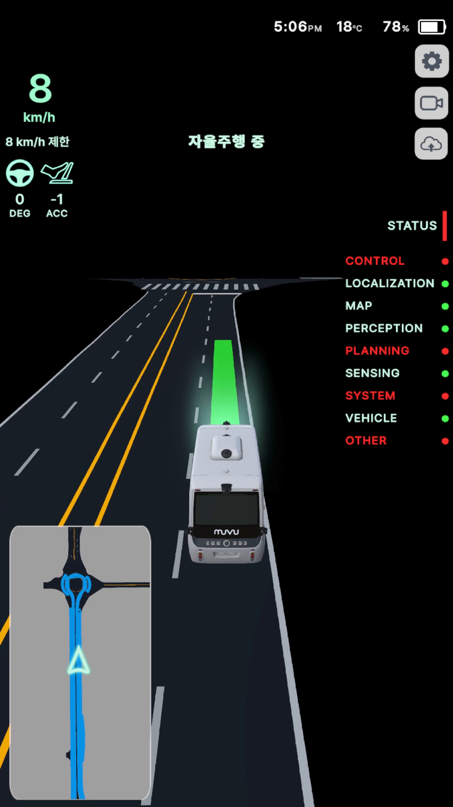
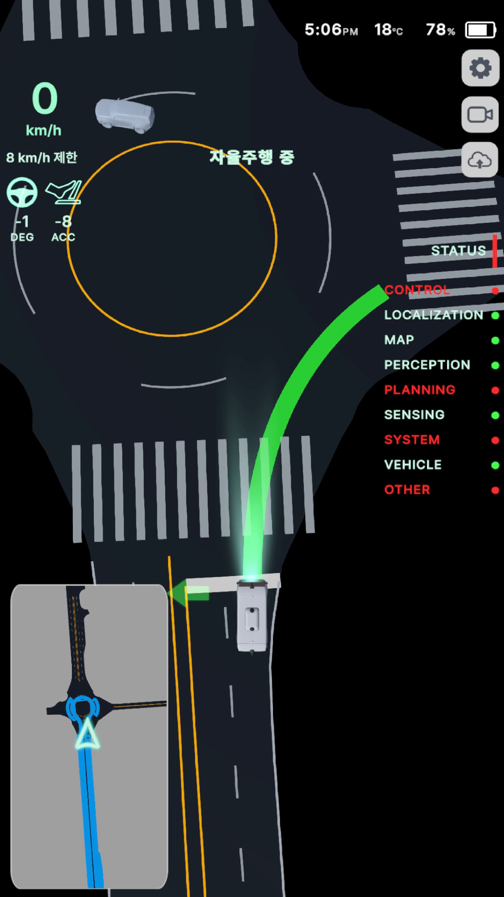
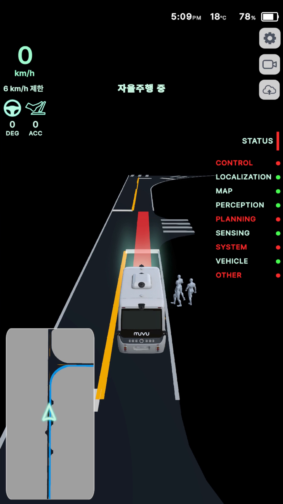
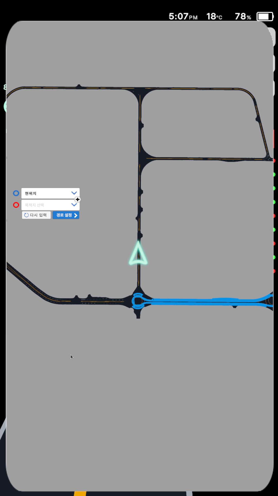
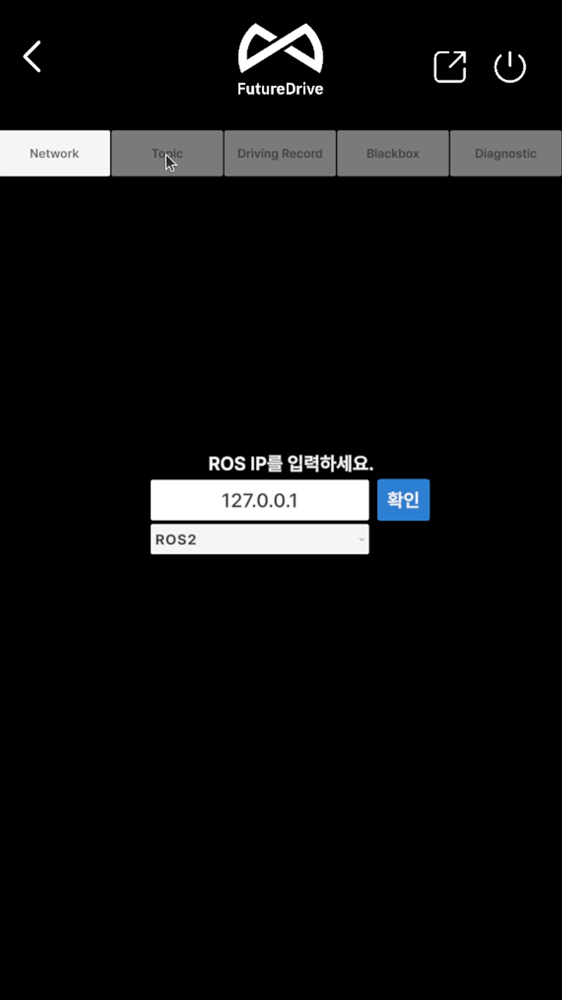
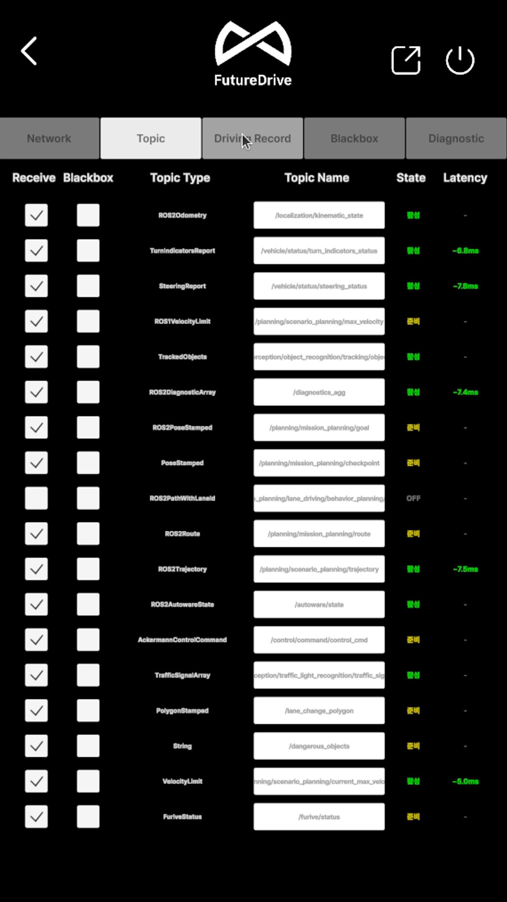
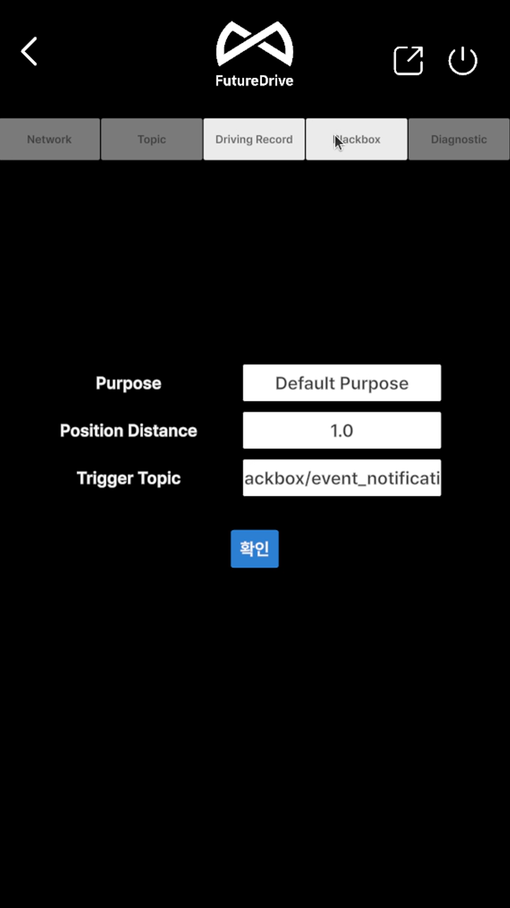
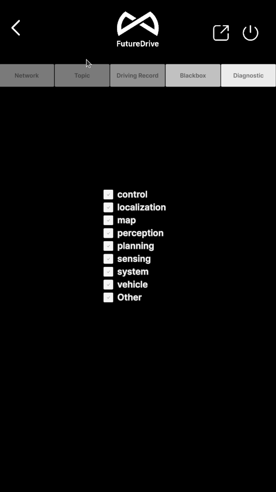
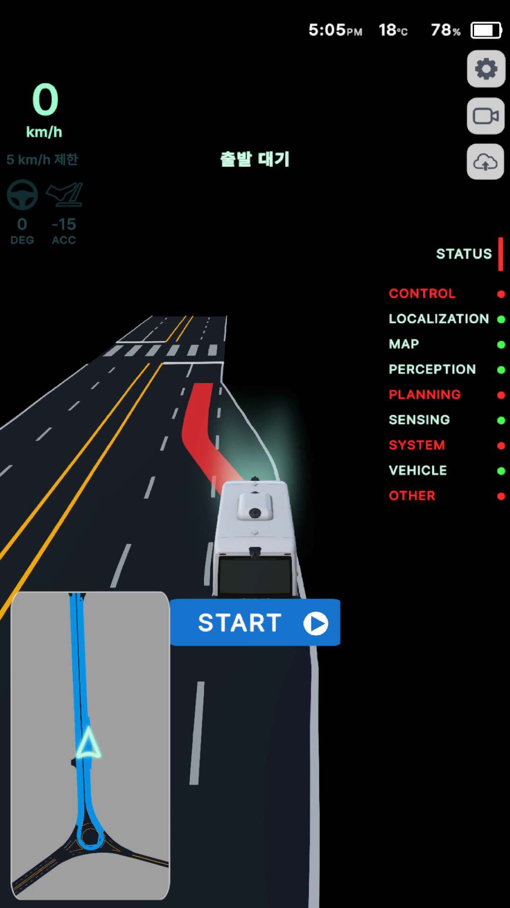

HMI 사용 가이드¶
HMI는 차량의 자율주행 상태를 탑승자와 운용자에게 시각화하는 edge 표시 화면입니다. 속도, 조향·가감속, 지도와 경로, 차량 주변 객체, Autoware 진단 범주, 기록·업로드 상태를 한 화면에서 보여 줍니다. 차량의 물리적 안전 확인이나 MGMT의 운행 제어를 대신하지 않습니다.
오프라인 배포용 편집본은 HMI PDF 사용 설명서입니다. PDF에는 주행 상태별 화면, 화면 요소별 번호 마킹, 창 제어와 Network·Topic·Driving Record·Blackbox·Diagnostic 설정 탭이 포함됩니다.
1. 시작과 화면 배치¶
차량 설치 묶음의 ./bootstrap.sh를 완료하면 HMI는 edge 로그인 뒤 자동으로 시작합니다. 모니터가 둘 이상이면
현재 runtime이 가장 오른쪽 모니터의 실제 해상도와 위치를 골라 전체화면으로 엽니다. 모니터가 하나이거나 자동
배치를 끈 구성에서는 별도 강제 위치를 사용하지 않습니다.
화면이 열리지 않을 때만 다음 순서로 확인합니다.
HMI는 integration-gateway와 ros2-rosbridge package에 의존합니다. Unity 프로세스만 살아 있고 화면 데이터가
갱신되지 않으면 HMI를 반복 실행하기 전에 두 의존성과 edge 연결을 확인합니다.
2. HMI의 역할과 안전 경계¶
[!WARNING] HMI의 지도, 차선, 경로와 사람·차량 객체는 수신한 데이터를 시각화한 결과입니다. 실제 장애물의 존재·부재, 주행 가능 여부, 비상정지 해제를 이 화면 하나로 판단하지 않습니다.
- 현재 HMI는 표시·경로 지정·기록 보조가 중심이며, 차량 운행 시작·정지의 기본 제어 화면은 MGMT입니다.
- 일부 배포 화면에는 큰
START버튼이 보일 수 있지만 HMI의 기본 역할은 상태 표시와 경로·기록 보조입니다. 운행 시작은 MGMT와 Autoware 운영 절차를 따르며 HMI의START를 기본 운용 절차로 사용하지 않습니다. - 속도나 상태가 멈춰 보이면 오래된 화면으로 운행을 계속하지 않습니다. 연결과 실제 차량을 확인합니다.
- 빨간 상태·경고음·긴급 패널은 원인을 조사하라는 신호입니다. 패널을 닫는 것은 비상 상태 해제가 아닙니다.
- 설정은 개발자가, 수동 녹화와 일괄 업로드는 승인된 운용자 또는 개발자가 사용합니다.
3. 메인 주행 화면 읽기¶

화면은 다음 순서로 읽습니다.
- 상단 정보: 현재 시간, 외기 온도, SOC와 배터리 아이콘을 표시합니다.
- 차량 운동 상태: 현재 속도, 제한 속도, 조향각(
DEG)과 가감속(ACC)을 표시합니다. - 자율주행 상태 문구: 시스템 준비 중, 경로 대기, 경로 계획, 출발 대기, 자율주행 중, 도착 또는 긴급 상태를 한글로 표시합니다.
- 3D 주행 시각화: 지도 차선, 차량 모델, 계획 경로·궤적과 인지 객체를 차량 기준으로 표시합니다.
- STATUS 목록: Control, Localization, Map, Perception, Planning, Sensing, System, Vehicle, Other 범주의 집계 상태를 색 점으로 보여 줍니다.
- 미니맵: 전체 경로와 현재 위치·방향을 축약해 보여 주며, 누르면 경로 설정용 큰 지도로 전환됩니다.
- 오른쪽 도구: 설정, 수동 기록 시작/중지, 저장된 기록 일괄 업로드 기능입니다.
속도 제한은 현재 차량 속도와 다른 값입니다. 화면 예시의 8 km/h는 현재 속도이고 8 km/h 제한은 목표
상한입니다. 조향·가감속 값은 명령 또는 상태 수신 결과이므로 차량의 물리적 움직임과 함께 확인합니다.
4. 경로와 3D 시각화¶
직선과 곡선 구간¶

- 차량 모델은 현재 pose와 heading을 기준으로 움직입니다.
- 굵게 빛나는 선은 현재 계획 경로·궤적을 강조합니다. 색만으로 정상 여부를 단정하지 않고 중앙 상태 문구와 STATUS를 함께 봅니다.
- 흰색·노란색 차선과 도로 경계는 수신한 map/lanelet 데이터의 표시입니다.
- 회전교차로처럼 곡률이 큰 구간에서는 차량 모델, 경로 선, 미니맵 방향이 같은 회전을 가리키는지 대조합니다.
3D 화면이 보이더라도 Localization이나 Map이 빨간색이면 현재 pose와 지도 정합을 신뢰하지 않습니다. 반대로 STATUS가 녹색이어도 실제 도로 공사, 사람 또는 장애물은 현장에서 따로 확인합니다.
인지 객체¶

사람·차량 같은 인지 객체는 3D 모델로 표시될 수 있습니다. 화면에 객체가 나타나면 경로와의 거리, 이동 방향과 실제 주변을 확인합니다. 객체가 화면에서 사라졌다고 안전해진 것은 아닙니다. 센서 가림, 토픽 지연, 분류 변경과 시야 밖 이동 가능성이 있습니다.
5. STATUS 색상과 경고¶
STATUS는 /autoware 진단 트리의 범주별 최대 심각도를 집계합니다.
| 표시 | 의미 | 운용자 행동 |
|---|---|---|
| 녹색 | 현재 집계가 정상 | 다른 필수 상태와 함께 운행 판단 |
| 주황색 | 경고 | 원인 확인, 악화 여부 감시 |
| 빨간색 | 오류 또는 긴급 수준 | 출발하지 않거나 안전 정차 후 진단 |
| 회색·미표시 | stale, 미수신 또는 준비 중 | 연결 복구 전 값 신뢰 금지 |
상단 STATUS 옆 세로 표시와 각 범주 색을 함께 봅니다. 범주를 선택할 수 있는 화면에서는 하위 진단을 펼쳐
원인을 좁힐 수 있습니다.
HMI는 diagnostics의 오류 수만으로 긴급정지를 만들지 않습니다. 별도 emergency 또는 hazard emergency 신호가 있을 때 긴급 상태를 표시합니다. Warning은 주황색과 반복 알림음, Emergency는 빨간색과 반복 경고음·메시지 패널을 사용합니다.
긴급 패널을 닫아도 서비스 요청이나 해제 명령은 전송되지 않습니다. 원인이 계속되면 다음 emergency 전환에서 다시 열릴 수 있습니다. 실제 비상 해제는 MGMT와 현장 절차에서 수행합니다.
6. 목적지와 경유지 설정¶
미니맵을 누르면 큰 지도와 위치 입력 패널이 열립니다.

- 현재 위치가 맞는지 확인합니다.
- 목적지 목록을 열어 승인된 목적지를 선택합니다.
- 필요한 경우
+로 경유지를 추가하고 순서를 확인합니다. - 지도 위 목적지 마커와 파란 전체 경로를 확인합니다.
경로 설정을 한 번 눌러 goal과 checkpoint를 publish합니다.- 큰 지도를 닫은 뒤 중앙 상태가
경로 계획에서출발 대기로 진행하는지 확인합니다.
다시 입력은 현재 목적지·경유지와 route 표시를 초기화하는 용도입니다. 운행 중 경로를 임의로 바꾸지 않습니다.
경로 설정 버튼에 반응이 없으면 반복 입력하지 말고 ROS 연결, goal publisher와 Planning 상태를 확인합니다.
7. 오른쪽 도구 버튼¶
설정¶
톱니바퀴는 유지보수용 설정 화면을 엽니다. 상단의 공통 버튼과 5개 탭은 다음처럼 구분합니다.

| 위치 | 기능 | 사용 경계 |
|---|---|---|
| 왼쪽 화살표 | 설정을 닫고 주행 화면으로 복귀 | 적용하지 않은 변경은 저장하지 않음 |
| 사각형·화살표 | 앱 전체화면과 창 모드 전환 | 차량 운행 상태와 무관 |
| 전원 아이콘 | Unity HMI 프로세스 종료 | 차량 정지 버튼이 아님 |
| 운영체제 최소화·최대화·닫기 | 창 모드일 때 제목 표시줄에 표시 | 앱 내부 버튼과 구분; 일반 운행 중 강제 종료 금지 |
설치된 HMI는 Furive runtime이 자동 시작과 화면 배치를 소유합니다. 일반 운용자는 창 모드·종료와 연결 설정을 바꾸지 않습니다. 개발자는 차량이 정지하고 표시 중단이 허용된 환경에서만 변경합니다.
Network¶
ROS IP는 HMI가 접속할 승인된 rosbridge 주소입니다. 정상 설치의 loopback 구성은127.0.0.1입니다.- ROS 버전은 bridge와 메시지 변환 방식에 맞춥니다.
확인은 연결을 다시 만들고 topic 구독을 재시작합니다. 단순 화면 저장 버튼이 아닙니다.- 적용 뒤
시스템 준비 중이 해제되는지, Topic 탭의 필수 행이 새로 활성화되는지 확인합니다.
Topic¶

| 열 | 의미 |
|---|---|
Receive |
HMI 표시용 구독 여부 |
Blackbox |
DLS 기록 대상 포함 여부; Receive와 별도 선택 |
Topic Type |
ROS1·ROS2 메시지 변환 형식 |
Topic Name |
실제 ROS graph의 topic 이름 |
State |
활성·준비·OFF 상태 |
Latency |
마지막 수신 지연; 비정상 음수는 시스템 시간 기준도 확인 |
ROS2DiagnosticArray /diagnostics_agg 행은 STATUS 입력이 실제로 들어오는지 확인하는 핵심 행입니다. 화면의
행이 비거나 준비에서 멈춰 있으면 정상 판정하지 않고 rosbridge, ROS domain과 bag/Autoware 입력을 확인합니다.
Driving Record¶

Purpose는 기록 목적입니다. 승인된 업무 표현만 사용하고 탑승자 이름 같은 불필요한 개인정보를 넣지 않습니다.Position Distance는 위치 기록 간격 기준입니다. 저장량과 분석 해상도를 함께 고려합니다.Trigger Topic은 기록 event를 시작시키는 topic입니다. 운영 설정은/data_logging_system/event_notification을 사용합니다./blackbox/event_notification이 남아 있으면 적용하지 말고 배포 설정을 확인합니다.확인뒤 실제 DLS 세션의 metadata와 설정값이 일치하는지 별도로 확인합니다.
Blackbox¶
Blackbox 탭은 저장소 종류, URL, Sid, trigger topic과 상시 기록을 설정합니다. 현재 차량의 기본 사용 범위는
로컬 DLS이며, NAS 기능은 NAS가 구성·승인된 차량에서만 사용합니다. 실제 URL·Sid·비밀번호를 화면 캡처나
문서에 남기지 않습니다. Continuous Recording을 켜기 전 저장 용량, 보존기간과 개인정보 처리를 확인합니다.
Diagnostic¶

Diagnostic 탭은 control, localization, map, perception, planning, sensing, system, vehicle,
Other를 STATUS 집계에 포함할지 선택하는 표시 필터입니다. 체크를 해제해도 오류가 해결되거나 진단 생성이
멈추지 않습니다. ROS/bag 입력이 없는 실행에서 목록이 비어 있으면 미수신 상태이며 PASS가 아닙니다.
수동 기록¶
카메라 모양 버튼은 Data Logging System에 수동 기록 시작을 요청합니다. 기록 중에는 중지 버튼으로 바뀌며, 버튼 상태는 명령을 누른 즉시가 아니라 recording state 응답을 받은 뒤 갱신됩니다.
- 운행 목적, 탑승자, 지역, 날씨 같은 metadata가 요구되면 실제 승인값만 입력합니다.
- 기록 시작 후 화면 상태가 바뀌고 저장 대상 package가 running인지 확인합니다.
- 기록 종료도 응답을 확인한 뒤 완료로 기록합니다.
세션 검색·재생·NAS 전송·보존 설정은 HMI의 작은 버튼이 아니라 독립된 DLS 사용 가이드를 따릅니다.
기록 일괄 업로드¶
구름·위쪽 화살표 버튼은 저장된 Synology 기록의 일괄 업로드를 요청합니다. 성공·실패 메시지를 받은 뒤 결과를 판정합니다. 네트워크 비용, 개인정보, 보존 정책과 반출 승인이 확인되지 않은 상태에서는 누르지 않습니다.
8. 운행 상태별 읽는 순서¶
시스템 준비 중 / 운행 상태 확인 중¶
ROS 연결 직후 또는 필수 상태가 아직 없을 때 표시됩니다. 이전 telemetry를 초기화한 뒤 새 값을 기다리는 상태이므로, 값이 채워지기 전 출발하지 않습니다.
경로 대기¶
현재 위치를 확인하고 목적지·경유지를 설정합니다. Map·Localization·Planning 범주를 함께 확인합니다.
경로 계획¶
경로 생성 중입니다. 미니맵의 전체 경로와 3D 경로가 나타날 때까지 기다립니다. 계획이 멈추면 Planning 세부 진단과 goal 입력을 확인합니다.
출발 대기¶
경로는 준비됐지만 운행 시작 전입니다. MGMT에서 차량·센서·Autoware·목표 속도와 안전 구역을 확인합니다.

[!IMPORTANT] 화면에
START가 보이는 배포 구성에서도 HMI를 기본 운행 시작 수단으로 사용하지 않습니다. 운행 시작은 MGMT와 Autoware 운영 절차가 소유합니다.
자율주행 중¶
현재 속도·제한 속도, 조향·가감속, 경로·차량 모델, 미니맵과 STATUS를 반복해서 교차 확인합니다. 한 영역이 멈추거나 서로 다른 움직임을 보이면 안전 정차 후 연결을 조사합니다.
경고 / 긴급¶
주황색 경고는 원인과 악화 여부를 확인합니다. 빨간 긴급 상태나 긴급 패널이 나타나면 현장 비상 절차와 MGMT를 사용해 차량을 안전하게 정지합니다. HMI 패널 닫기를 해제로 오해하지 않습니다.
9. 문제 해결¶
| 증상 | 먼저 확인 | 다음 조치 | 하지 않을 것 |
|---|---|---|---|
| HMI 창이 없음 | edge 상태, 그래픽 세션, HMI package 로그 | furive service restart |
Unity binary 직접 복사·교체 |
| 다른 모니터에 열림 | 연결된 모니터 수와 가장 오른쪽 geometry | display 자동 배치 설정 확인 | xrandr 값을 임의 영구 저장 |
시스템 준비 중 지속 |
integration-gateway, ros2-rosbridge, ROS domain | 의존 package와 연결 로그 | 과거 값으로 운행 |
| 지도·차선이 없음 | Map STATUS, lanelet/map topic | map source와 localization 확인 | 검은 배경을 정상 지도라 간주 |
| 차량 모델·경로가 어긋남 | pose, heading, route, 미니맵 | 안전 정차 후 정합 조사 | HMI 표시만 기준으로 계속 주행 |
| STATUS 빨간색 | 해당 범주의 하위 진단 | 소유 package 로그 확인 | 패널만 숨기고 출발 |
| 경로 설정 반응 없음 | goal/checkpoint 입력, Planning, ROS 연결 | 경로 초기화 후 한 번 재설정 | 버튼 연속 입력 |
| 기록 버튼 상태 안 바뀜 | Data Logging System 연결과 state 응답 | package 로그와 기록 상태 확인 | 저장 성공으로 간주 |
| 업로드 실패 | 승인, 네트워크, Synology 설정 | 결과 메시지와 서버 로그 확인 | credential 재입력·공유 |
10. 보안·개인정보¶
- HMI는 내부 runtime endpoint를 통해 integration gateway와 통신합니다. 정상 운행 중 설정 화면에서 IP나 port를 임의 변경하지 않습니다.
- 목적지·경유지와 주행 경로는 위치 정보입니다. 화면 캡처와 외부 공유 범위를 제한합니다.
- 기록에는 영상, 센서, 차량 상태와 탑승자 관련 metadata가 포함될 수 있습니다. 고객 정책에 맞는 동의, 보존기간, 접근권한과 삭제 절차를 적용합니다.
- 일괄 업로드는 승인된 저장소와 계정으로만 수행합니다. credential은 화면 캡처·문서·저장소에 넣지 않습니다.
- HMI 화면은 데이터 표시 결과이며 safety controller가 아닙니다. 표시 오류가 차량 안전 상태를 변경하지도, 안전을 보증하지도 않습니다.
11. 운행 전·후 확인표¶
운행 전:
- [ ] HMI가 의도한 오른쪽 모니터에 전체화면으로 열렸다.
- [ ] 시간, SOC, 현재 속도와 실제 차량 상태가 일치한다.
- [ ] Map·Localization·Perception·Planning과 필수 STATUS를 확인했다.
- [ ] 차량 모델, heading, 3D 경로와 미니맵 방향이 일치한다.
- [ ] 목적지·경유지와 전체 경로가 승인된 운행 계획과 같다.
- [ ] 빨간 긴급·운행 차단 경고가 없고 MGMT 출발 전 점검이 끝났다.
운행 후:
- [ ] 차량이 실제 정지했고 HMI 현재 속도도 0이다.
- [ ] 필요한 수동 기록을 종료하고 state 응답을 확인했다.
- [ ] 업로드가 필요한 경우 승인과 성공/실패 결과를 기록했다.
- [ ] 긴급·경고가 있었다면 원인과 시각, 관련 진단을 보존했다.
- [ ] 화면을 강제 종료하지 않고 운영 종료 절차를 따랐다.
12. Furive OS 연계 구조와 프로토콜¶

HMI는 edge에서 독립 Unity package로 실행됩니다. main의 Autoware ROS 2 data는 ROS Domain Bridge와 Zenoh
Bridge를 거쳐 edge ROS 2 domain 17에 도착하고, HMI는 같은 PC의 127.0.0.1:9090 rosbridge WebSocket에서
기본 BSON frame으로 허용된 topic을 구독합니다. rosbridge에는 client 인증이 없기 때문에 loopback에만
바인딩하고 topic allowlist와 subscribe-only 경계를 유지합니다.
PC 사이 Zenoh 경로는 QUIC/UDP :7447, TLS 1.3 mutual TLS이며 설치가 배포한 node certificate 검증과 exact
peer-CN ACL을 통과해야 합니다. Furive OS main↔edge 상태·명령도 별도의 TCP :15001/TLS 1.3 mTLS 제어면을
사용합니다. HMI의 기록 버튼은 같은 edge의 Integration Gateway를 통해 DLS에 요청을 전달하지만, DLS의
녹화·세션·전송 상태를 HMI가 소유하지 않습니다.
13. 현재 runtime 계약¶
| 항목 | 현재 기준 |
|---|---|
| 실행 위치 | edge |
| package 이름 | hmi |
| 배포 형식 | amd64 Docker image에서 signed Unity payload를 host graphical session에 materialize |
| 자동 시작 | 설치 구성의 autostart.enabled: true |
| 의존 package | integration-gateway, ros2-rosbridge |
| 화면 배치 | 모니터 2개 이상이면 가장 오른쪽 모니터 전체화면 |
| health | process check, 시작 유예 30초 |
| 업데이트 | stop-start, 실패 시 rollback |
| 기본 제어 경계 | HMI Engage 숨김, MGMT/Autoware 운용 절차 사용 |
HMI source 개발은 독립 HMI 저장소에서 수행하고 Furive OS는 package 실행, health, 배포와 화면 session을 연결합니다. Unity binary를 설치 경로에서 직접 바꾸거나 root 저장소에 HMI 상태 정책을 복제하지 않습니다.